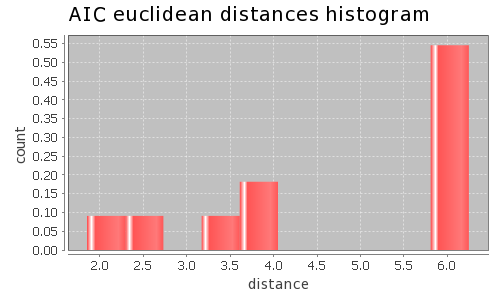
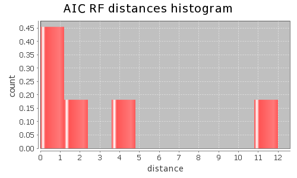
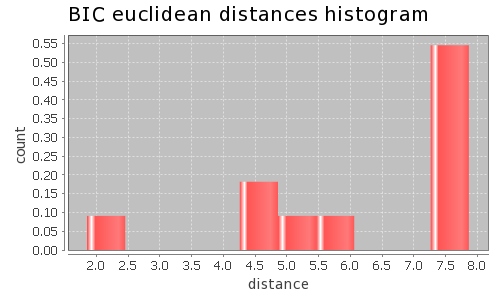

Application Meta
jModeltest 2.1
(c) 2011-onwards D. Darriba, G.L. Taboada, R. Doallo and D. Posada,(1) Department of Biochemistry, Genetics and Immunology
University of Vigo, 36310 Vigo, Spain.
(2) Department of Electronics and Systems
University of A Coruna, 15071 A Coruna, Spain.
e-mail: ddarriba@udc.es, dposada@uvigo.es
Tue May 14 03:40:22 EDT 2013
Linux 2.6.32-279.22.1.el6.x86_64, arch: amd64, bits: 64, numcores: 8
| Citation: | Darriba D, Taboada GL, Doallo R and Posada D. 2012. "jModelTest 2: more models, new heuristics and parallel computing". Nature Methods 9, 772. |
 Back to top
Back to top Settings
Arguments = -d aligned.fasta -g 4 -f -AIC -BIC -a -S BESTInput Alignment: "aligned.fasta"
NumTaxa = 12
Length = 708
Phyml version = 3.0
Phyml binary = PhyML_3.0_linux64
Candidate models = 12
number of substitution schemes = 3
including models with equal/unequal base frequencies (+F)
including only models without a proportion of invariable sites
including models with/without rate variation among sites (+G) (nCat = 4)
Optimized free parameters (K) = Substitution parameters + 21 branch lengths + topology
Base tree for likelihood calculations = Maximum Likelihood
Tree topology search operation = Best of {NNI, SPR}
Model Optimization Results
| ID | Name | Partition | -lnL | p | fA | fC | fG | fT | ti/tv | R(a) | R(b) | R(c) | R(d) | R(e) | R(f) | p-inv | shape |
|---|---|---|---|---|---|---|---|---|---|---|---|---|---|---|---|---|---|
| 1 | JC | 000000 | 5573.0164 | 22 | - | - | - | - | - | - | - | - | - | - | - | - | - |
| 2 | JC+G | 000000 | 5329.6785 | 23 | - | - | - | - | - | - | - | - | - | - | - | - | 0.5190 |
| 3 | F81 | 000000 | 5506.9473 | 25 | 0.2631 | 0.2857 | 0.1473 | 0.3040 | - | - | - | - | - | - | - | - | - |
| 4 | F81+G | 000000 | 5239.2153 | 26 | 0.2819 | 0.2997 | 0.1327 | 0.2858 | - | - | - | - | - | - | - | - | 0.4720 |
| 5 | K80 | 010010 | 5489.4315 | 23 | - | - | - | - | 1.2142 | - | - | - | - | - | - | - | - |
| 6 | K80+G | 010010 | 5226.5606 | 24 | - | - | - | - | 1.6358 | - | - | - | - | - | - | - | 0.4760 |
| 7 | HKY | 010010 | 5414.0011 | 26 | 0.2807 | 0.2829 | 0.1401 | 0.2963 | 1.2942 | - | - | - | - | - | - | - | - |
| 8 | HKY+G | 010010 | 5091.4590 | 27 | 0.3305 | 0.2966 | 0.1111 | 0.2618 | 2.6197 | - | - | - | - | - | - | - | 0.3370 |
| 9 | SYM | 012345 | 5381.4056 | 27 | - | - | - | - | - | 6.3253 | 6.1941 | 4.4848 | 1.0821 | 11.4120 | 1.0000 | - | - |
| 10 | SYM+G | 012345 | 5125.0148 | 28 | - | - | - | - | - | 5.3043 | 5.0068 | 3.6576 | 0.4588 | 17.0622 | 1.0000 | - | 0.4630 |
| 11 | GTR | 012345 | 5362.8600 | 30 | 0.2589 | 0.2598 | 0.1784 | 0.3030 | - | 5.4967 | 6.9976 | 3.4727 | 1.2128 | 8.9851 | 1.0000 | - | - |
| 12 | GTR+G | 012345 | 5085.1888 | 31 | 0.3263 | 0.2839 | 0.1380 | 0.2518 | - | 1.7781 | 4.3718 | 1.5646 | 0.5272 | 9.1935 | 1.0000 | - | 0.3770 |
There are 4 different topologies. The following table shows the models supporting each topology and the rank according to each Information Criterion, as well as Robinson-Foulds and Euclidean distances with the tree of the best-fit model.
| ID | Models | Topology | AIC | BIC | AICc | DT | |
|---|---|---|---|---|---|---|---|
| 0 |
JC+G F81+G K80+G HKY+G SYM+G GTR+G
|
RANK | 0 | 0 | - | - | |
| Weight | 1.0000 | 1.0000 | - | - | |||
| RF | 0 | 0 | - | - | |||
| AVG Distance | 2.5906e+00 | 3.6481e+00 | - | - | |||
| Distance VAR | 1.8344e+00 | 4.1520e+00 | - | - | |||
| 1 |
K80 HKY
|
RANK | 1 | 1 | - | - | |
| Weight | 0.0000 | 0.0000 | - | - | |||
| RF | 2 | 2 | - | - | |||
| AVG Distance | 6.2264e+00 | 7.8471e+00 | - | - | |||
| Distance VAR | 1.2106e-04 | 1.1039e-04 | - | - | |||
| 2 |
JC F81
|
RANK | 2 | 2 | - | - | |
| Weight | 0.0000 | 0.0000 | - | - | |||
| RF | 4 | 4 | - | - | |||
| AVG Distance | 6.2430e+00 | 7.8625e+00 | - | - | |||
| Distance VAR | 2.4918e-05 | 2.7904e-05 | - | - | |||
| 3 |
SYM GTR
|
RANK | 3 | 3 | - | - | |
| Weight | 0.0000 | 0.0000 | - | - | |||
| RF | 12 | 12 | - | - | |||
| AVG Distance | 6.1460e+00 | 7.7562e+00 | - | - | |||
| Distance VAR | 6.0823e-04 | 6.1885e-04 | - | - |
AIC Selection Results
Model selected
| Model | GTR+G | ||
|---|---|---|---|
| partition | 012345 | ||
| -lnL | 5085.1888 | ||
| K | 31 | ||
| freqA | 0.3263 | R(a) | 1.7781 |
| freqC | 0.2839 | R(b) | 4.3718 |
| freqG | 0.1380 | R(c) | 1.5646 |
| freqT | 0.2518 | R(d) | 0.5272 |
| ti/tv | - | R(e) | 9.1935 |
| R(f) | 1.0000 | ||
| p-inv | - | gamma | 0.3770 |
Best model tree
(seq1:0.00000001,se_0:0.00000001,(Loach:0.00001546,(Carp:0.17314939,(Frog:0.24271418,(Chicken:0.53108700,(Human:0.55849052,((Mouse:0.12838284,Rat:0.11475058):0.14403211,(Whale:0.14657199,(Cow:0.15020859,Seal:0.22545097):0.03929890):0.05219886):0.10933311):0.17406019):0.07499624):0.17619237):0.23785051):6.90885912);
Display best model tree in PhyloWidget
| Model | -lnL | K | AIC | delta | weight | cumWeight |
|---|---|---|---|---|---|---|
| GTR+G | 5085.1888 | 31 | 10232.3776 | 0.0000 | 0.9064 | 0.9064 |
| HKY+G | 5091.4590 | 27 | 10236.9181 | 4.5405 | 0.0936 | 1.0000 |
| SYM+G | 5125.0148 | 28 | 10306.0296 | 73.6521 | 0.0000 | 1.0000 |
| K80+G | 5226.5606 | 24 | 10501.1212 | 268.7436 | 0.0000 | 1.0000 |
| F81+G | 5239.2153 | 26 | 10530.4306 | 298.0531 | 0.0000 | 1.0000 |
| JC+G | 5329.6785 | 23 | 10705.3570 | 472.9795 | 0.0000 | 1.0000 |
| GTR | 5362.8600 | 30 | 10785.7199 | 553.3423 | 0.0000 | 1.0000 |
| SYM | 5381.4056 | 27 | 10816.8112 | 584.4336 | 0.0000 | 1.0000 |
| HKY | 5414.0011 | 26 | 10880.0022 | 647.6246 | 0.0000 | 1.0000 |
| K80 | 5489.4315 | 23 | 11024.8630 | 792.4854 | 0.0000 | 1.0000 |
| F81 | 5506.9473 | 25 | 11063.8946 | 831.5171 | 0.0000 | 1.0000 |
| JC | 5573.0164 | 22 | 11190.0327 | 957.6551 | 0.0000 | 1.0000 |
| -lnL: | negative log likelihod |
| K: | number of estimated parameters |
| AIC: | Akaike Information Criterion |
| delta: | AIC difference |
| weight: | AIC weight |
| cumWeight: | cumulative AIC weight |
Confidence interval
There are 12 models in the 100.00% confidence interval:
GTR+G HKY+G SYM+G K80+G F81+G JC+G GTR SYM HKY K80 F81 JC

Euclidean distances histogram from each model optimized tree to GTR+G tree.
Euclidean distances histogram from each model optimized tree to GTR+G tree.

Robinson-Foulds distances histogram from the different topologies to GTR+G topology.
Robinson-Foulds distances histogram from the different topologies to GTR+G topology.
Model Averaged Phylogeny
| Selection criterion | AIC |
|---|---|
| Confidence interval | 100.00% |
| Consensus type | 50% majority rule |
(seq1:0.000000,se_0:0.000000,(Loach:0.000015,(Carp:0.173149,(Frog:0.242714,(Chicken:0.531087,(Human:0.558491,((Whale:0.146572,(Cow:0.150209,Seal:0.225451)1.00:0.039299)1.00:0.052199,(Mouse:0.128383,Rat:0.114751)1.00:0.144032)1.00:0.109333)1.00:0.174060)1.00:0.074996)1.00:0.176192)1.00:0.237851)1.00:6.908859);
Display consensus tree in PhyloWidget
BIC Selection Results
Model selected
| Model | HKY+G | ||
|---|---|---|---|
| partition | 010010 | ||
| -lnL | 5091.4590 | ||
| K | 27 | ||
| freqA | 0.3305 | R(a) | - |
| freqC | 0.2966 | R(b) | - |
| freqG | 0.1111 | R(c) | - |
| freqT | 0.2618 | R(d) | - |
| ti/tv | 2.6197 | R(e) | - |
| R(f) | - | ||
| p-inv | - | gamma | 0.3370 |
Best model tree
(seq1:0.00000001,se_0:0.00000001,(((Frog:0.27554975,(Chicken:0.63512372,(Human:0.67416400,((Mouse:0.14852694,Rat:0.13255548):0.18727833,(Whale:0.17349474,(Cow:0.15542377,Seal:0.25995232):0.04903945):0.05975169):0.13850446):0.22891328):0.07960379):0.20963990,Carp:0.17481387):0.26473240,Loach:0.00004898):8.50650454);
Display best model tree in PhyloWidget
| Model | -lnL | K | BIC | delta | weight | cumWeight |
|---|---|---|---|---|---|---|
| HKY+G | 5091.4590 | 27 | 10360.1041 | 0.0000 | 0.9989 | 0.9989 |
| GTR+G | 5085.1888 | 31 | 10373.8133 | 13.7093 | 0.0011 | 1.0000 |
| SYM+G | 5125.0148 | 28 | 10433.7781 | 73.6740 | 0.0000 | 1.0000 |
| K80+G | 5226.5606 | 24 | 10610.6198 | 250.5158 | 0.0000 | 1.0000 |
| F81+G | 5239.2153 | 26 | 10649.0542 | 288.9501 | 0.0000 | 1.0000 |
| JC+G | 5329.6785 | 23 | 10810.2933 | 450.1892 | 0.0000 | 1.0000 |
| GTR | 5362.8600 | 30 | 10922.5932 | 562.4892 | 0.0000 | 1.0000 |
| SYM | 5381.4056 | 27 | 10939.9972 | 579.8931 | 0.0000 | 1.0000 |
| HKY | 5414.0011 | 26 | 10998.6258 | 638.5217 | 0.0000 | 1.0000 |
| K80 | 5489.4315 | 23 | 11129.7992 | 769.6951 | 0.0000 | 1.0000 |
| F81 | 5506.9473 | 25 | 11177.9557 | 817.8517 | 0.0000 | 1.0000 |
| JC | 5573.0164 | 22 | 11290.4065 | 930.3024 | 0.0000 | 1.0000 |
| -lnL: | negative log likelihod |
| K: | number of estimated parameters |
| BIC: | Bayesian Information Criterion |
| delta: | BIC difference |
| weight: | BIC weight |
| cumWeight: | cumulative BIC weight |
Confidence interval
There are 12 models in the 100.00% confidence interval:
HKY+G GTR+G SYM+G K80+G F81+G JC+G GTR SYM HKY K80 F81 JC

Euclidean distances histogram from each model optimized tree to HKY+G tree.
Euclidean distances histogram from each model optimized tree to HKY+G tree.
Robinson-Foulds distances histogram from the different topologies to HKY+G topology.
Model Averaged Phylogeny
| Selection criterion | BIC |
|---|---|
| Confidence interval | 100.00% |
| Consensus type | 50% majority rule |
(seq1:0.000000,se_0:0.000000,(Loach:0.000049,(Carp:0.174814,(Frog:0.275550,(Chicken:0.635124,(Human:0.674164,((Whale:0.173495,(Cow:0.155424,Seal:0.259952)1.00:0.049039)1.00:0.059752,(Mouse:0.148527,Rat:0.132555)1.00:0.187278)1.00:0.138504)1.00:0.228913)1.00:0.079604)1.00:0.209640)1.00:0.264732)1.00:8.506505);
Display consensus tree in PhyloWidget